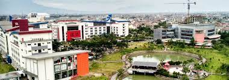

Sejarah Telkom University
Universitas Telkom masih berusia muda. Universitas Telkom didirikan tanggal 17 Juli tahun 2013 sehingga pada tahun 2017, Universitas Telkom baru berusia empat tahun. Dalam usianya yang masih sangat muda, Universitas Telkom telah mencetak prestasi sedemikian rupa. Pada kenyataannya, Universitas Telkom sesungguhnya telah memiliki sejarah yang jauh lebih panjang dari empat tahun itu, hingga mencapai bentuknya seperti sekarang ini. Sejarah yang cukup panjang sebelum terbentuknya Universitas Telkom, telah meletakkan pondasi kuat bagi pendidikan dan kultur yang terbentuk di universitas.
Akar kuat Universitas Telkom adalah Sekolah Tinggi Teknologi Telkom, disingkat STT Telkom, yang didirikan pada tahun 28 September 1990 dan diresmikan Presiden Soeharto. STT Telkom adalah sekolah tinggi gagasan dari Dirut Telkom tahun 1988-1992 yaitu Ir. Cacuk Sudaryanto. Pada awal berdirinya, STT Telkom memiliki tiga kampus. Kampus 1 ada di jalan Soekarno Hatta. Kampus 2 ada di jalan Geger Kalong Hilir, dan Kampus 3 ada di jalan PH. Mustofa atau jalan Suci. Pada tahun 1993, ketiga kampus STT Telkom disatukan dan dipusatkan di jalan Telekomunikasi Kabupaten Bandung, lokasi Universitas Telkom sekarang ini. Ketika STT Telkom didirikan tahun 1990, sekolah memiliki tiga jurusan, yaitu Jurusan Teknik Elektro, Teknik Informatika, dan Teknik Industri. Dalam Jurusan Teknik Elektro terdapat dua program studi, yaitu program studi S1 Teknik Telekomunikasi dan D3 Teknik Telekomunikasi. Jadi, prodi S1 Teknik Telekomunikasi adalah salah satu dari prodi yang tertua di kawasanpendidikan ini.